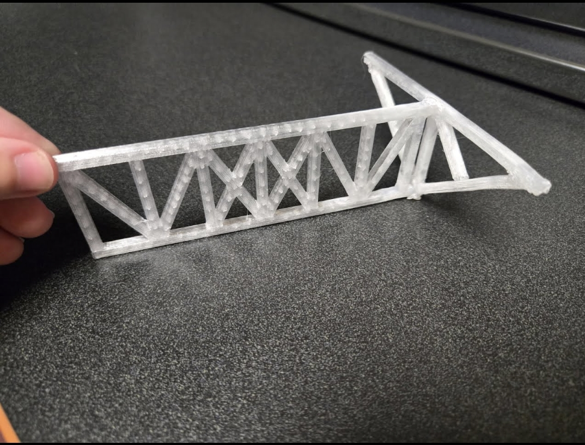
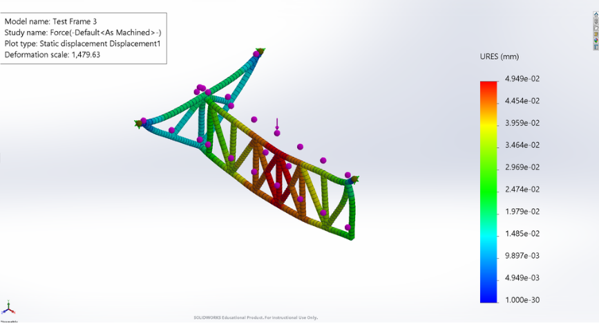

2025 · DESIGN · FEA · MANUFACTURING · 3D PRINTING
Racing Wheelchair Frame Optimization
Mechanical design and optimization project applying CAD, finite element analysis, and prototyping to a racing wheelchair frame.

Overview
This project focused on investigating and improving the design of a racing wheelchair frame. The design of the racing wheelchair frame centered on balancing structural strength with stiffness and lightweight performance. The geometry was modified and tested to safely support a human occupant while minimizing mass to maximize competitive speed. It was tested on SolidWorks FEA for maximum deformation, bending stress, and tensile stress. It was also tested in class with weights hung on it. The design overall had the best weight to load ratio. It also won the lightest functiontional frame in the class to.
CAD Design
CAD tools were used to develop and modify the wheelchair frame geometry.

FEA
Finite element analysis was used to investigate structural behavior and identify opportunities for optimization.

Prototyping
Prototype components were produced to evaluate the physical implementation of the design.